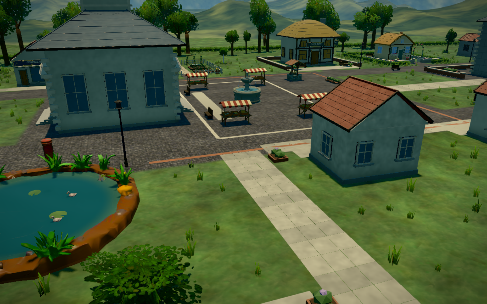
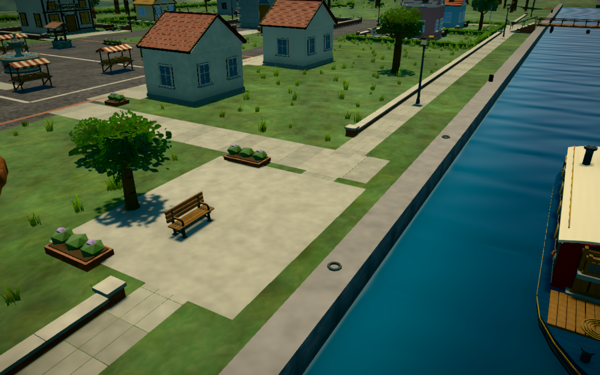
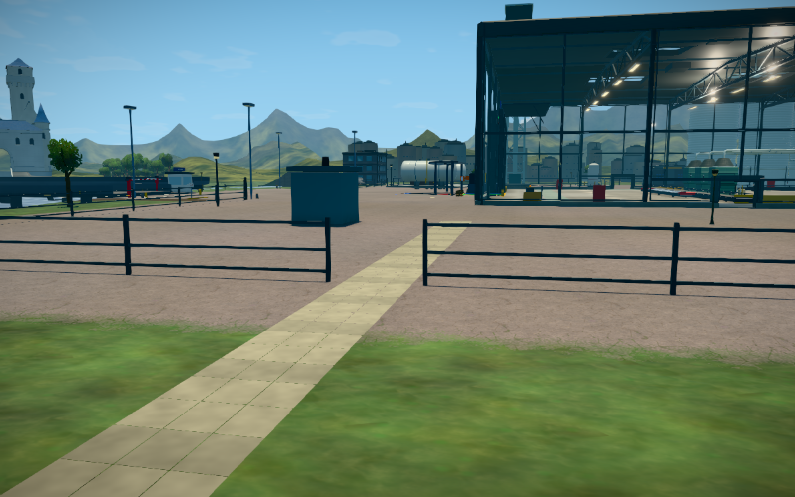
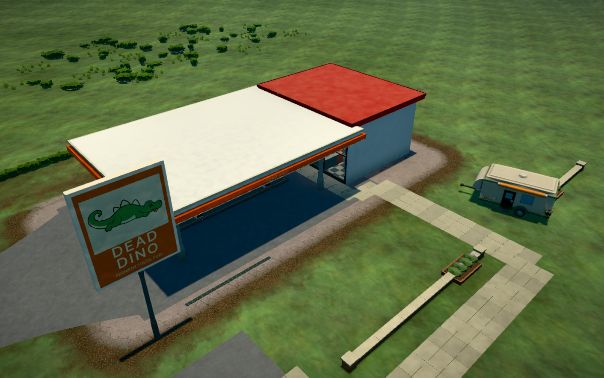
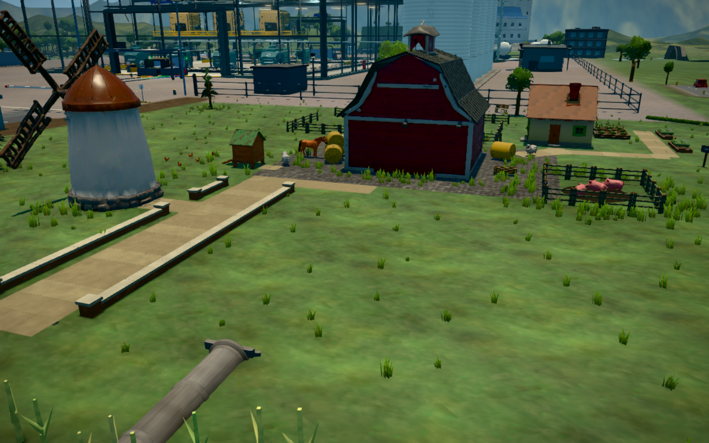
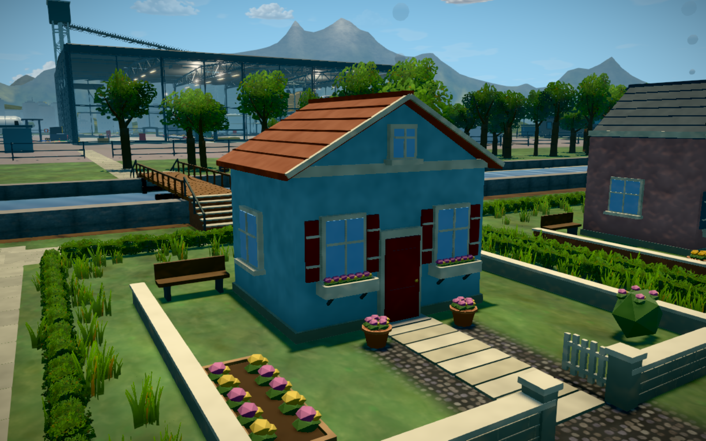
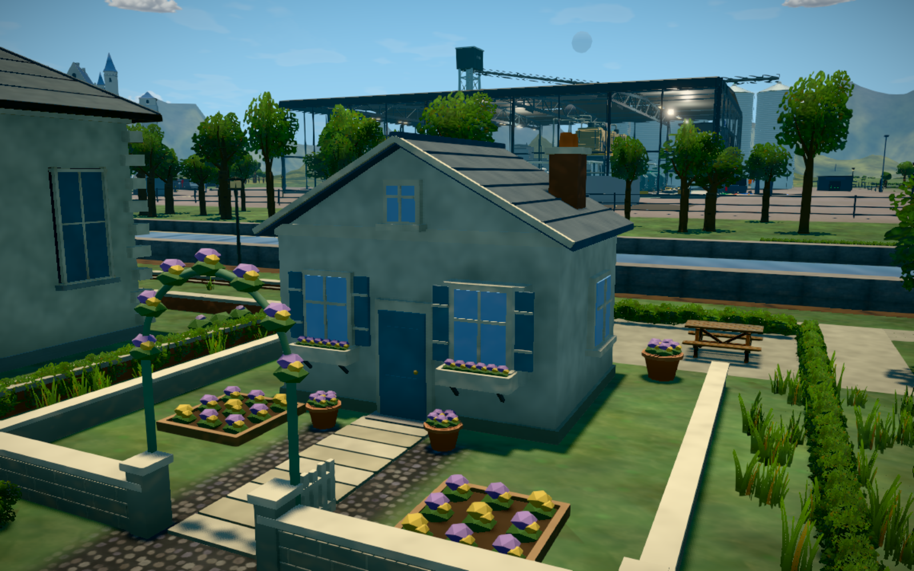
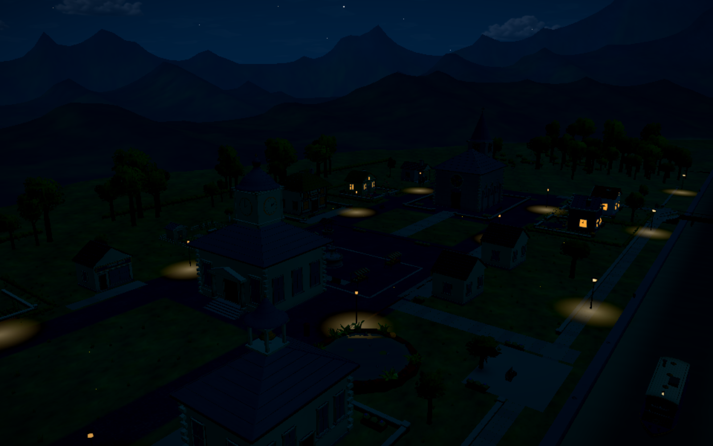
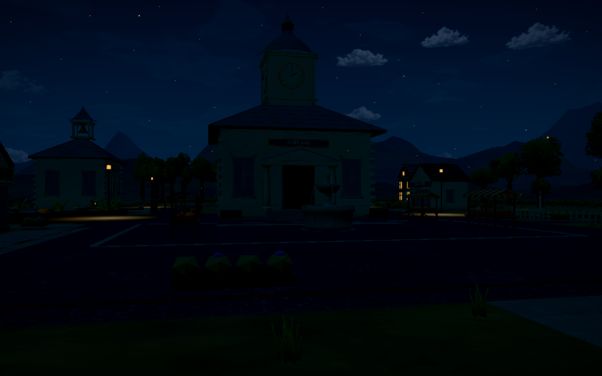
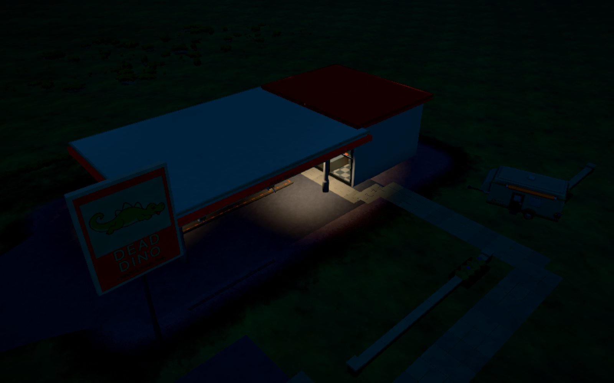

A connected village
The square, civic grounds, gardens and canal share a restrained palette and connected paths.
A proper village square
Paving bands frame the market and fountain, with an open route towards the church.
A place for the church
Capped brick boundaries, a broad gateway, planted corners and quiet benches.
The pub courtyard
A paved street-facing court with seating and low garden walls.
School grounds
A defined frontage and enclosed garden, clear of neighbouring homes.
Across the canal
Stone-topped steps and iron handrails meet the existing timber bridge.
Rose Gable courtyard
A brick courtyard and pots give this home a different garden arrangement.
Brick & Sage kitchen garden
Productive beds and climbing plants replace repeated flower borders.

Square to towpath
A direct passage between the bakery and pond.

A small waterside square
Mooring rings, seating and planted edges give the boat a setting.

The mill connection
The canal footway passes through a real gap in the site boundary.

From parking to shop
A footway reaches the side entrance, clear of the caravan and forecourt columns.

A working farm approach
An earth-coloured track links the field, windmill and barnyard.

Bluebell House
A quieter lawn with a long side border.

Pearl Cottage
Small staggered flower beds, a bay window and a climbing arch.

Evening in the village
Existing lamps and warm windows keep the composition readable after dark.

The square after dark
The same paths and boundaries under the existing night lighting.

The station at night
The established canopy lights illuminate the forecourt.